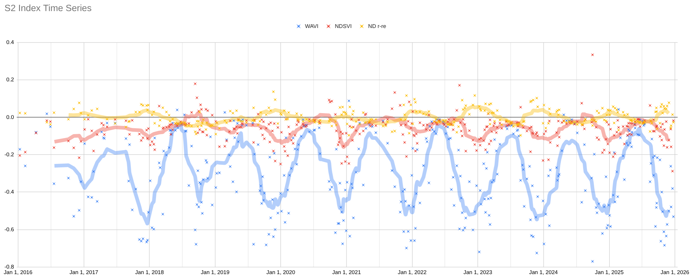
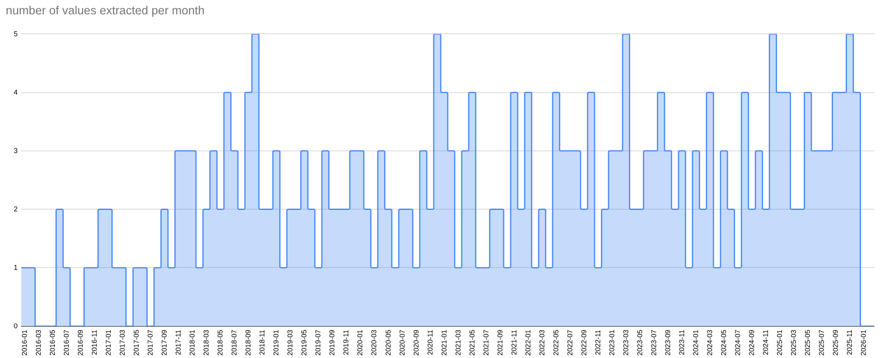
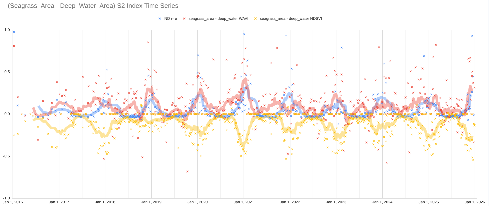
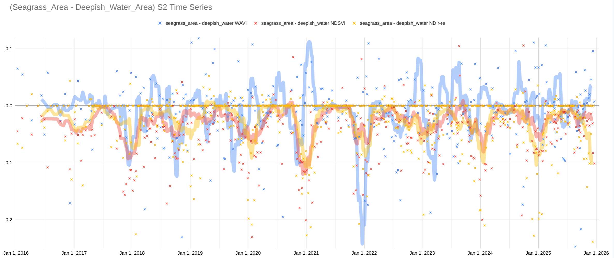
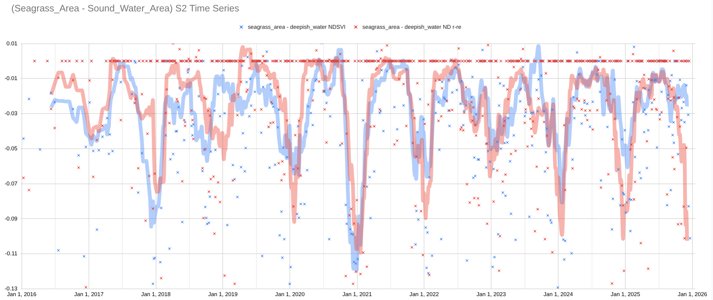

An attempt was made to visualize seagrass change over time in select regions of St Andrew’s Bay using landsat-harmonized Sentinel 2 imagery.
The latest script and worksheet is linked below. Links in the text may reference older snapshots.
- TS Extraction GEE Script
- [TS Visualization GSheet](https://docs.google.com/spreadsheets/d/1s2DFIbGCChC2puwLrBrPqXgujDPrJ_vGxG375ZpRY5M
Background
Indices
Several Indices are used in this analysis.
NDSVI
The Normalized Difference Subaquatic Vegetation Index (NDSVI) index was used. This index is calculated as (Blue-Green)/(Blue+Green). For Sentinel NDSVI is calculated as (B2-B3)/(B2+B3).
WAVI
The Water Adjusted Vegetation Index (WAVI) 1 has been suggested as a useful index for seagrass detection by 2. WAVI is defined as the normalized difference between the near infrared and blue bands. For Sentinel-2 the calculation is WAVI = (B8-B2)/(B8+B2) ```
ND Red - VRE_1
A ratio between red and the first red edge band has been suggested by 3. An index was adapted from this suggestion by applying a normalized difference between the red and first red edge band (ND_r_vre1 = (r-vre1)/(r+vre1)). For Sentinel-2 the calculation is (B4-B5)/(B4+B5).
Events & Expected Patterns
Seagrass seasonality
Seagrass is known to be more prominent in the summer, so a seasonal cycle is expected.
Hurricane Michael
Hurricane Michael was a catagory 5 storm which made landfall around Mexico Beach, FL on 10 October 2018. Mexico beach is approximately 32km (20mi) from the selected region of interest and significant impacts to the area were observed.
Methods
Image Processing
Bands were normalized by the sum of all bands. Daily composites were made for days with multiple images. A cloud mask using the CloudScore+ product was applied.
Region of Interest Selection
Two areas of seagrass loss between 2020 and 2024 were manually identified using the IMaRS SIMM project seagrass .tif files.
Workflow
Sentinel images were cloudmasked and the mean was taken from within these areas using this GEE script. The resulting values were downloaded as a .csv and imported into this gsheet.
Results
Indices Time Series
The three indices were plotted over time for the selected seagrass region.
 Plot of indices extracted from seagrass area.
Each of the indices shows a seasonal cycle. This cycle could be a result of lighting changes, atmospheric changes, water quality changes, or changes in seagrass.
Note that values before 2018 should be treated with extra suspicion, as the number of values extracted from images was low before 2018.

Causes of Seasonality
Deep Water Baseline Reference Region
To explore the cause of the seasonal signal an offshore area was selected to use as a baseline reference region. A small modification was made to the previous GEE script to create a script which extracts the deep water region.
The indices extracted from the deep water region were subtracted from the seagrass area.

The resulting “corrected” series retain strong seasonality. The seasonal signal is unlikely to be from atmospheric or optical changes, as these would have been removed through subtraction of the deep water region. The seasonality could be explained by seagrass phenology or turbidity cycles. The “hurricane Michael” event is prominent in the NDSVI index.
Sound Water Baseline Reference Region
The same method was applied for an area of water from within the sound. This water is not as deep as the offshore region, so changes on the seafloor here may be an issue. Use of this baseline reference area should correct for changes in optical properties and water quality. Any remaining signal would be specific to the seagrass bed. Some water quality differences between the two regions may remain. The two areas are approxmately 2km apart, with the seagrass being further inshore (and shallower).

The remaining seasonality indicates that the seasonal signal of the seagrass area is stronger than the seasonality a nearby area of “deepish” water.
Seasonality is more consistent for the NDSVI and ND_R_RE indices. The WAVI index seems to vary inconsistently throughout the year.
The NDSVI and ND_R_RE signals covary closely. The WAVI signal sometimes co-varies and other times shows inverse correlation with the other two indices. Inverse correlation seasons are observed in winters of 2020, 2021, and 2024. Correlation events are observed in winter 2018, summer 2020, winter 2022, and winter 2025. These differences may indicate different kinds of events (turbidity vs algae blooms).
The co-varying indices are plotted without the comparatively noisy WAVI index.

In this closer look the winter of 2018 is notable as the smallest trough in the 2018-2026 time series. This could be a direct effect of hurricane Michael. This event is also characterized by a dis-correlation of the two series. This indicates that a difference between indices could be an indicator of these seagrass-phenology or water quality events.
Future Work / TODO
- compare with sandy near-shore area
- explore differencing indices as described in previous section.